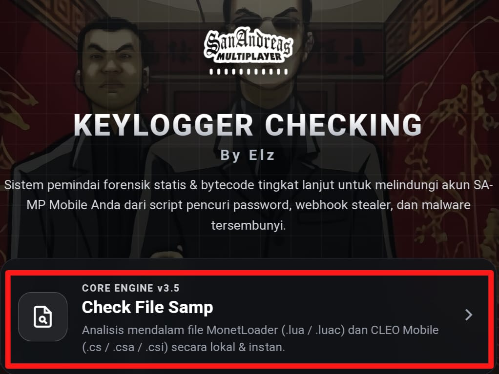
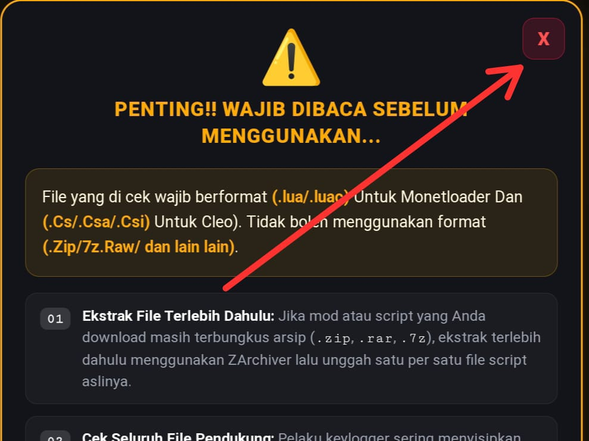
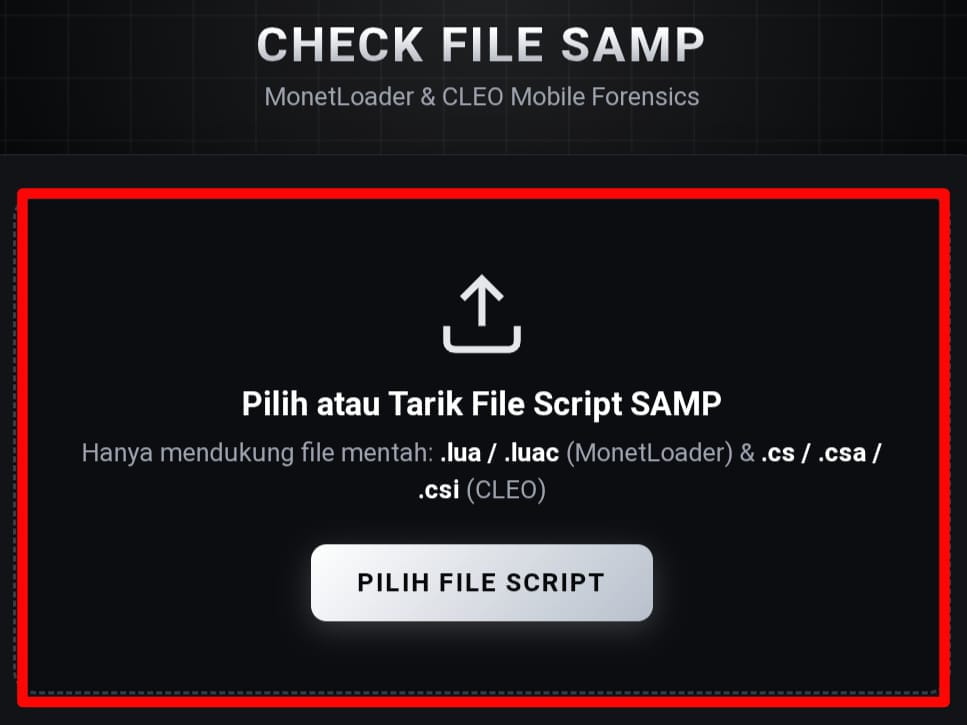
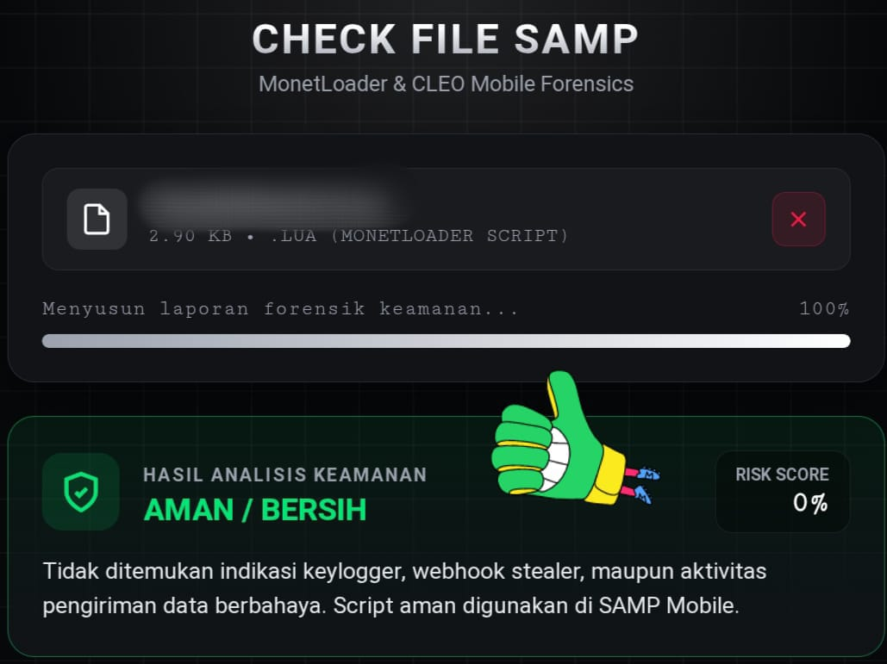
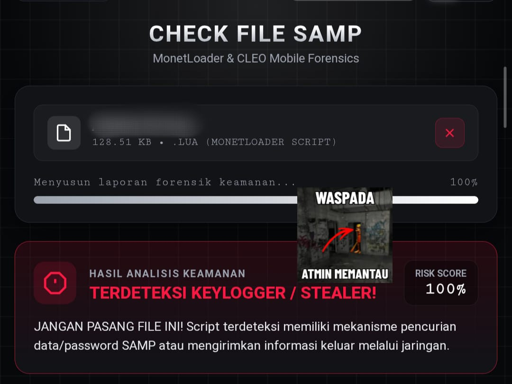

LANGKAH 01

Tekan menu Check File samp pada halaman utama.
By Elz
Sistem pemindai forensik statis & bytecode tingkat lanjut untuk melindungi akun SA-MP Mobile Anda dari script pencuri password, webhook stealer, dan malware tersembunyi.
Analisis mendalam file MonetLoader (.lua / .luac) dan CLEO Mobile (.cs / .csa / .csi) secara lokal & instan.
Tutorial lengkap langkah demi langkah cara menggunakan fitur Check File Samp beserta panduan gambar.
Pelajari apa itu keylogger, bagaimana cara kerjanya mencuri akun SAMP, serta cara mencegahnya.
Dukung Elz untuk terus mengembangkan database deteksi keylogger terbaru dan pembaruan fitur gratis.
MonetLoader & CLEO Mobile Forensics
Hanya mendukung file mentah: .lua / .luac (MonetLoader) & .cs / .csa / .csi (CLEO)
File yang di cek wajib berformat (.lua/.luac) Untuk Monetloader Dan (.Cs/.Csa/.Csi) Untuk Cleo). Tidak boleh menggunakan format (.Zip/7z.Raw/ dan lain lain).
Ekstrak File Terlebih Dahulu: Jika mod atau script yang Anda download masih terbungkus arsip (.zip, .rar, .7z), ekstrak terlebih dahulu menggunakan ZArchiver lalu unggah satu per satu file script aslinya.
Cek Seluruh File Pendukung: Pelaku keylogger sering menyisipkan pencuri akun di file library tambahan (misalnya file .lua kecil di dalam folder lib), bukan hanya di script utamanya.
100% Privasi Terjaga: Proses pemindaian berjalan langsung di perangkat Anda tanpa mengunggah file ke server mana pun.
Cara Menggunakan Fitur Pemindai Script SAMP Dengan Benar

Tekan menu Check File samp pada halaman utama.

Tekan Tombol ❌ Setelah membaca peraturan tentang format file.

Tekan Pilih file Script.

Jika muncul tulisan hijau yang menyatakan file tersebut aman, Berarti file tersebut dinyatakan aman dan tanpa keylogger.

Jika muncul tulisan merah atau kuning yang menyatakan file tersebut berbahaya maka file tersebut mengandung keylogger dan dilarang keras untuk digunakan.
Edukasi Keamanan Akun SA-MP Mobile
Keylogger (Keystroke Logger) adalah program atau potongan kode berbahaya yang dirancang untuk merekam, menyadap, dan mencuri setiap ketikan tombol maupun input teks yang dimasukkan pengguna pada perangkat mereka secara diam-diam tanpa sepengetahuan korban.
Pada ekosistem GTA SA-MP Android (seperti MonetLoader berformat .lua / .luac maupun CLEO Mobile berformat .cs / .csa / .csi), pelaku kejahatan biasanya menyamarkan keylogger di dalam mod gratis seperti mod grafik, mod senjata, mod kendaraan, atau script pembantu gameplay.
Saat pemain masuk ke dalam server dan mengetikkan Password Akun atau PIN Keamanan melalui kotak dialog login maupun perintah chat (/login, /register), script keylogger akan menangkap teks tersebut beserta Nickname dan IP Server, lalu mengirimkannya secara otomatis ke server pelaku melalui Discord Webhook atau Bot Telegram.
Selalu periksa setiap file .lua, .luac, .cs, .csa, dan .csi menggunakan fitur Check File Samp sebelum memasangnya ke folder game, hindari mengunduh mod dari sumber tidak jelas, serta gunakan password yang unik untuk setiap server SA-MP.
Dukung Pengembangan Tools SAMP Security
Terima kasih telah menggunakan KEYLOGGER CHECKING. Tools ini dibuat gratis untuk membantu komunitas pemain SA-MP Mobile terhindar dari pencurian akun. Dukungan Anda sangat berarti untuk biaya riset signature keylogger baru dan pemeliharaan sistem.
Penambahan pola deteksi metode obfuscation dan webhook stealer terbaru.
Akses penuh untuk seluruh pemain SAMP Android tanpa batasan jumlah scan.
Password salah!
Tekan ikon titik tiga (⋮) di pojok kanan atas browser Chrome Anda, lalu pilih menu "Tambahkan ke layar utama" atau "Install aplikasi" untuk memasang pintasan KEYLOGGER CHECKING dengan ikon ikon.png.